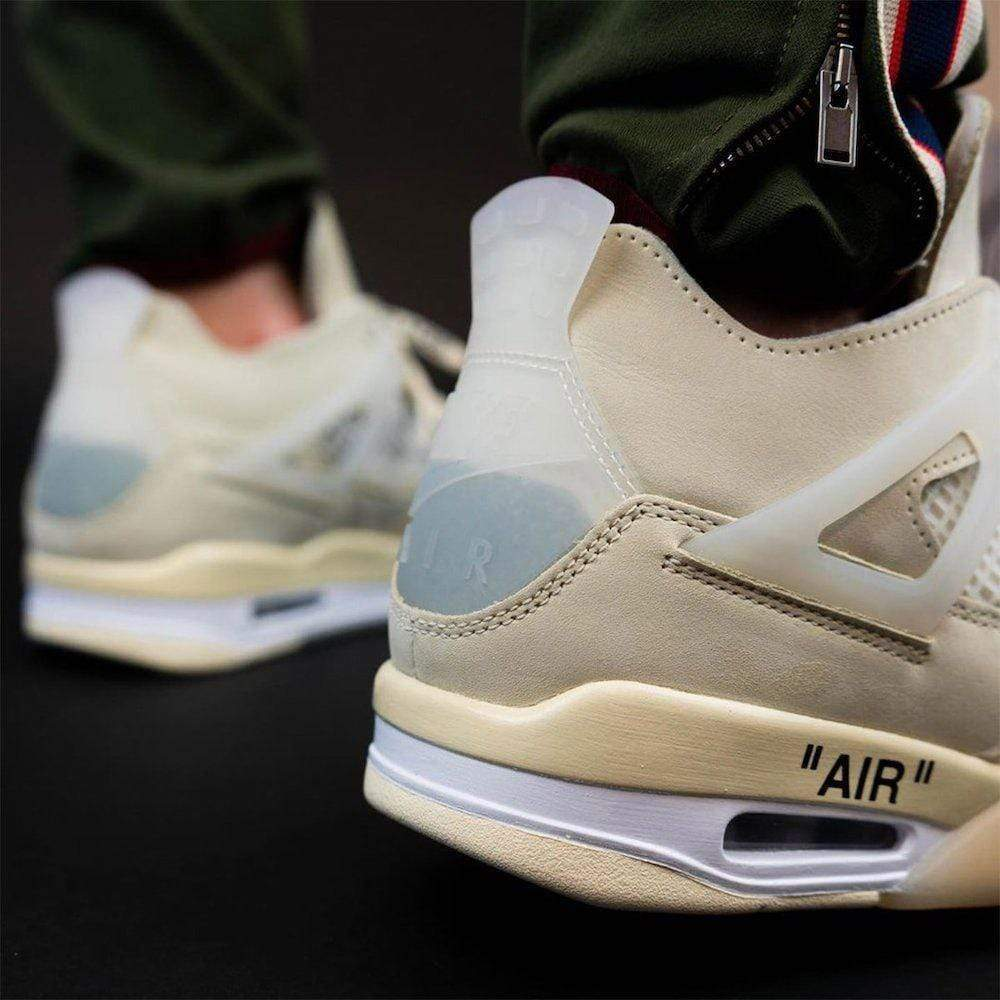

Air Jordan 4 Off-White Sail
Estos tenis son un lanzamiento especial de la mano del diseñador de Off White y la colección masculina de Louis Vuitton, Virgil Abloh. El modelo se aleja de lo clásicos blancos que han invadido el mercado durante los últimos años, para pintarse de un amarillo cremoso que reviste el modelo.
Este calzado destaca por tener una inspiración que viene directamente del chunky sneaker, que además tiene una inspiración vintage por la forma en la que la palabra AIR está escrita en la suela, como si fueran una variante que sin problemas, pudo haber sido creada en los 90.

Compra por USD$1,499